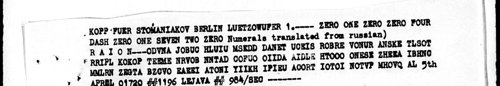

At a glanceCiphertext-only break · complete
- The telegram
- Nr 1196 (984/Sec), signed Lejava, 5 April 1921, Moscow to Berlin, addressed to Kopp for Stomoniakov.
- Where
- NARA RG 59, Central Decimal File 861.00, microfilm M316 roll 41, frame 0787. Part of catalogue 669.
- The cipher
- Russian in Latin letters, written in rows of 11 and sent column by column in a secret order.
- How it was deciphered
- Annealing against a Russian language model, with no crib. Width 11 scored −3.47 against −4.47 for shuffled letters.
- What it says
- An order has gone to Litvinov to transfer fifty thousand gold rubles to Berlin for the Scientific-Technical Department's orders.
- Still open
- Who Fedorovskii and "Litvinov" are is inferred from context. No independent reader has checked this yet.
01 The telegram

The heading names Kopp, the Soviet representative in Berlin, as the channel, and Stomoniakov as the recipient. The operator typed the numbers 01004 and 01720 and the word RAION in clear, and the text closes with the serial and the signature. We take "Lejava" to be A. M. Lezhava of the foreign-trade commissariat; the frame gives only the surname.
02 How the key came out
On this model, held-out Russian scores −2.14 per letter and shuffled letters −4.96. At width 11 the search reached −3.47, a full point above its shuffled control, while widths 8 to 10 and 12 gained 0.2 or less. Polishing brought it to −2.74, close to real Russian.
Read-out order of the columns, 0–10: 1 0 3 4 9 10 2 6 5 7 8. Short telegrams have short keys here: raw scores rise with width and hid this one at first, so each width has to be compared with its own control.
03 What it says
сообщите Федоровскому двоеточие одновременно дано распоряжение Литвинову [о] переводе [в] Берлин [в] уплату заказам научно-технического отдела контрвалюта пятьдесят тысяч рублей золотом
Inform Fedorovskii, colon: at the same time an order has been given to Litvinov for a transfer to Berlin in payment of the orders of the Scientific-Technical Department, countervalue fifty thousand gold rubles.
04 What remains uncertain
- Every letter has a place, but the text carries slips that look like radio errors:
fedorovnkomu,danorampori,upbatu,desiittybiach. litvino suis read as Литвинову from context, so Litvinov is probable, not certain.- Fedorovskii is probably N. M. Fedorovskii, a mineralogist at the Supreme Economic Council and on its Scientific-Technical Department's board in 1922–27. We found nothing placing him in Berlin in 1921.
Voikov's buying order is another message in this system, with its own key. The figure traffic in the same file, a different cipher, is not solved.
Full texts
The transcription and the decryption of every document on this page, so that the reading can be used and checked. Short files are shown here; all are in the repository.
Nr 1196, 5 April 1921
Moscow tells the Berlin trade office to inform Fedorovskii that an order has gone to Litvinov to transfer fifty thousand gold rubles to Berlin, to pay for the orders of the Scientific-Technical Department.
Transcription
ODVNA JOBUC HLUIU MSEDD DANET UCEIS ROBRE VONUR ANSKE TLSOT RRIPL KOKOP TEEME NRVOB NNTAD COFUO OIIDA AIDLE HTOOO ONESE ZHEEA IBHNC MMLRN ZEGTA BZCVO EAEEI ATONI YIIKH IPIEU ACORT IOTOI NOTVP MHOVQ AL
Decryption
soobschitef edorovnkomu dvoetochieo dnovreminno danorampori ajenielitvi nosuperevod eberlinupba tuzakazamna uchnotechni cheskogootd elekontrval iuaepiatqde siittybiach rubleizolot om
Reading
сообщите Федоровскому двоеточие одновременно дано распоряжение Литвинову [о] переводе [в] Берлин [в] уплату заказам научно-технического отдела контрвалюта пятьдесят тысяч рублей золотом
Translation
Inform Fedorovskii, colon: at the same time an order has been given to Litvinov for a transfer to Berlin in payment of the orders of the Scientific-Technical Department, countervalue fifty thousand gold rubles.
Key: m0405.txt.key.json
05 Sources
- NARA, RG 59, 861.00, M316 roll 41: frame 0787.
- Bristol, No. 153, 20 April 1921, on the interception: frame 0871.


Transcription, key and reading: targets/lejava1921/; solver: targets/stomoniakov1921/.
Cite this page
Daniel Bourdeau, “Lejava to Stomoniakov: fifty thousand gold rubles, 5 April 1921”, Cyphersolver, posted 2 November 2026, https://cyphersolver.com/lejava1921.html.